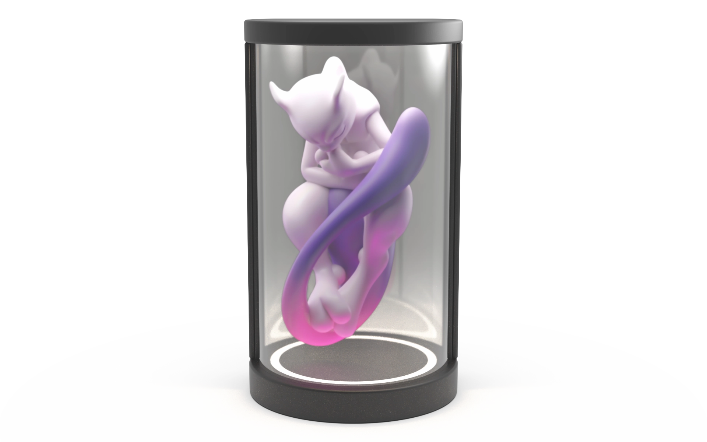

透明感夜燈
讓角色如同駐立於透明艙體中。
以圓柱透明顯示結構探索居家夜燈的角色展示體驗，讓影像與艙體外觀共同構成產品的視覺效果。系統以 T113 驅動 SPI＋RGB 面板，自行開發 LVGL 圖片／影片播放器，透過按鍵調整亮度及切換上一部、下一部影片。亮度調整同時作用於 LED 燈光與面板背光，讓照明與影像呈現取得合適的配置。
開發範圍T113 平台與 SPI＋RGB 面板整合、LVGL 圖片／影片播放器開發、按鍵控制、LED 與面板背光共同調節，以及圓柱透明顯示結構規劃。

01 / ARCHITECTURE
自行開發 LVGL 圖片／影片播放器
以 T113 與 SPI＋RGB 面板為基礎，串接自行開發的 LVGL 播放器與按鍵操作。
圖片與影片播放
以 LVGL 自行開發播放器，支援角色圖片與影片呈現。
按鍵切換影片
透過按鍵切換上一部、下一部影片，提供直接的本機操作方式。
T113 面板整合
整合 T113 平台與 SPI＋RGB 面板，銜接播放器與顯示端。
待補圖片：T113、LVGL 播放器、按鍵與面板架構
16:10 · 建議 1920 × 1200 px
02 / IMPLEMENTATION
LED 與面板背光共同調節
亮度按鍵同時調節 LED 燈光與面板背光，讓艙體照明與角色影像取得合適的配置。
按鍵調整亮度
透過本機按鍵調整亮度，共同改變燈光與顯示效果。
兩路亮度共同控制
同一次操作調節 LED 與面板背光，協調照明及影像亮度。
透明艙體的觀看效果
配合透明艙體調整燈光與背光，呈現角色駐立其中的效果。
待補圖片：亮度按鍵與 LED／面板背光共同調節
16:10 · 建議 1920 × 1200 px
03 / OUTCOME
開發進度與實機驗證
目前已自行開發 LVGL 圖片／影片播放器，以按鍵切換影片及調整亮度，並共同調節 LED 燈光與面板背光。產品主圖為設計示意；後續以實機展示播放操作、上一部／下一部影片切換，以及不同亮度配置下的觀看效果。實機紀錄、測試條件與驗證結果待補。
待補圖片：實機播放、按鍵操作與亮度配置比較
16:10 · 建議 1920 × 1200 px